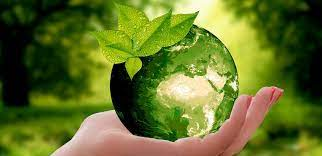

El medio ambiente es el espacio en el que confluyen todos los elementos físicos, químicos y biológicos que interactúan y se relacionan de un modo u otro. Por tanto, es el espacio, así como todos los elementos que lo conforman, en el que puede haber vida tal y como la conocemos.Entre las principales razones para cuidar el medio ambiente podemos destacar las siguientes:
En las últimas décadas, las cuestiones medioambientales han ido ocupando un lugar cada vez más visible en la agenda de desarrollo. La destrucción de los bosques y otros hábitats naturales, la sobreexplotación de recursos, la contaminación química y la falta de agua y saneamiento seguros en gran parte del mundo en desarrollo siguen afligiendo a las sociedades y obstaculizando el proceso de desarrollo. Los avances en los ODM sólo pueden sostenerse con un planeta sano. Los medios de vida de las personas pobres dependen básicamente de los recursos naturales, y los cambios y fluctuaciones ambientales a menudo provocan impactos devastadores sobre su capacidad de supervivencia, limitando su acceso a servicios básicos como el agua, el saneamiento y la energía.

Para mas informacion acerca de la contaminacion de nuestro planeta tiera, dejamos a su disposicon la informacion necesaria para mayor comododidad